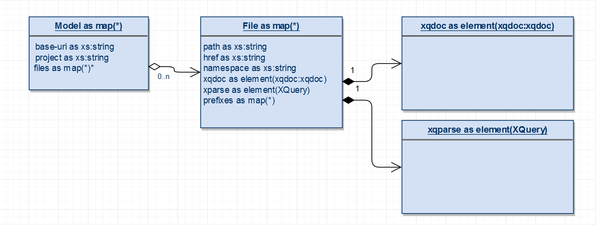

Given a list of the files to process, xqDocA creates an XQuery map that holds information about the source location of each file along with a created XML parse tree and xqdoc output. This map is referred to as the model.
The model can be depicted as follows:

Another map, $options, holds configuration options to apply to the
run. This map includes a list of "renderers" to run against the
model.
A renderer creates a single output file. There are currently two kinds of renderers.
global: generate an output that is project wide, such as an index.
module: generate an output for each XQuery source file, such as a direct rendering of its xqDoc file.